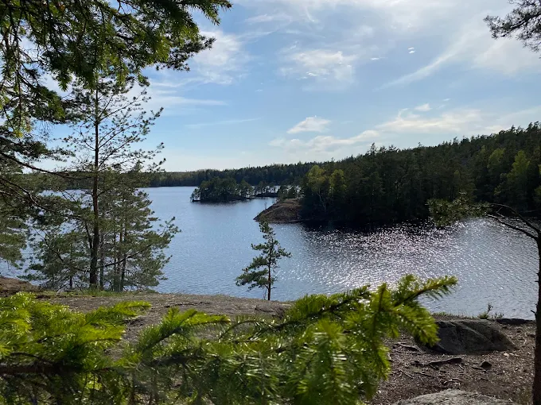
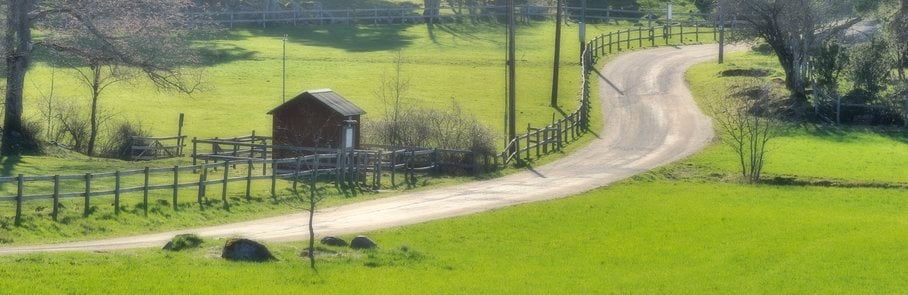
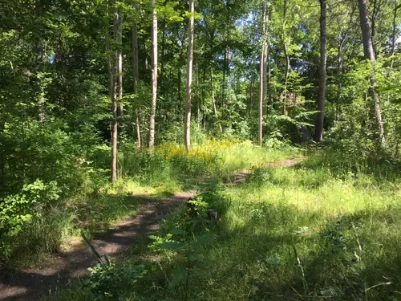

Upptäck Stockholms vackra vandringsleder
Från innerstans skogspromenader till skärgårdens kuststigar - hitta din perfekta vandring i Stockholms närområde
Våra vandringskategorier

Enkla leder
Perfekt för nybörjare som vill komma igång med vandring. Korta och välmarkerade leder med lätt terräng.
Se enkla leder

Utmanande leder
För erfarna vandrare som söker längre sträckor och mer krävande terräng. Utmaning och naturupplevelser garanterade.
Se utmaningar

Familjeleder
Barnvänliga leder med rastplatser, sevärdheter och kortare sträckor. Perfekt för en dag i naturen med hela familjen.
Se familjevandringar

Kollektivtrafikleder
Lättillgängliga leder nära buss, tunnelbana eller pendeltåg. Perfekt om du inte har bil eller vill resa miljövänligt.
Se lättillgängliga leder